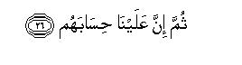

بسم الله الرحمن الرحيم
Sayyid Abul Ala Maududi - Tafhim al-Qur'an - The Meaning of the Qur'an
 88.
Surah Al Ghashiya (The Overwhelming Event)
88.
Surah Al Ghashiya (The Overwhelming Event)
The Surah takes its name from the word al-ghishiyah in the first verse.
The whole subject matter of the Surah indicates that this too is one of the earliest Surahs to be revealed; but this was the period when the Holy Prophet (upon whom be peace) had started preaching his message publicly, and the people of Makkah were hearing it and ignoring it carelessly and thoughtlessly.
To understand the subject matter well one should keep in view the fact that in the initial stage the preaching of the Holy Prophet (upon whom be peace) mostly centered around two points which he wanted to instill in the people's minds: Tauhid and the Hereafter: and the people of Makkah were repudiating both. Let us now consider the subject matter and the style of this Surah.
At the outset, in order to arouse the people from their heedlessness, they have been plainly asked:"Do you have any knowledge of the time when an overwhelming calamity will descend?" Immediately after this details of the impending calamity are given as to how the people will be divided into two separate groups and will meet separate ends. One group of the people will go to Hell and they will suffer punishment; the second group will go to the sublime Paradise and will be provided with, blessings.
After thus arousing the people the theme suddenly changes and the question is asked: Do not these people, who frown and scorn the teaching of Tauhid and the news of the Hereafter being given by the Qur'an, observe the common things which they experience daily in their lives? Do they never consider how the camels, on whom their whole life activity in the Arabian desert depends, came into being, endowed precisely with the same characteristics as were required for the beast needed in their desert life? When they go on their journeys, they see the sky, the mountains, or the earth. Let them ponder over these three phenomena and consider as to how the sky was stretched above them, how the mountains were erected and how the earth was spread beneath them? Has all this come about without the skill and craftsmanship of an All- Powerful, All Wise Designer? If they acknowledge that a Creator has created all this with great wisdom and power and that no one else is an associate with Him in their creation, why then do they refuse to accept Him alone as their Lord and Sustainer? And if they acknowledge that that God had the power to create all this, then on what rational ground do they hesitate to acknowledge that that God also has the power to bring about Resurrection, to recreate man, and to make Hell and Heaven?
After making the truth plain by this concise and rational argument, the address turns from the disbelievers to the Holy Prophet (upon whom be peace) and he is told: "If these people do not acknowledge the truth, they may not; you have not been empowered to act with authority over them, so that you should coerce them into believing: your only task is to exhort, so exhort them. Ultimately they have to return to Us; then We shall call them to full account and shall inflict a heavy punishment on those who do not believe."

In the name of Allah, the Compassionate, the Merciful.
[1-16] Has the news of the over-shadowing calamity (of Resurrection) reached you?1 Some faces2 on that Day shall be downcast, laboring, hard, feeling weary, scorching in the blazing fire. They will be given to drink from a boiling fountain, and their only food will be thorny, dry grass,3 which will neither fatten nor satisfy hunger. Some faces on that Day shall be joyful, well-pleased with their endeavors,4 in a lofty Garden; there they shall hear no idle talk.5 In it there will be running springs; in it there will be raised couches, goblets set forth,6 cushions ranged in rows and fine carpets spread out.
[17-20] (They do not believe:) but, do they not look at the camels, how they were created? And at the heaven, how it was raised high? And at the mountains, how they were firmly set? And at the earth, how it was spread out?7

[21-26] Well, (O Prophet) go on admonishing them, for you are only an admonisher. You are not there to coerce them.8 But on him who turns away and disbelieves, Allah will inflict a heavy punishment. To Us they have to return; then it is for Us to call them to account.
1"The over-shadowing calamity": the Resurrection which will overshadow the whole world. One should know that here the Hereafter as a whole is being depicted, which comprehends all the stages from the upsetting of the present system to the resurrection of all human beings and the dispensation of rewards and punishments from the Divine Court.
2Some faces : some persons, so said for the face is the most conspicuous part of the human body by which man s personality is judged and which reflects the good or bad states through which man passes.
3At some places in the Qur'an it has been stated that the dwellers of Hell will be given zaqqum to eat; at another place it has been said that they will have no other food but glhislin (washing from wounds), and here that "their only food will he thorny, dry grass." There is, in fact, no contradiction between these statements. This may as welt mean that Hell will have many different compartment in which different categories of the criminals will be lodged according to their crimes, and subjected to different punishments. This may also mean that if they try to avoid zaqqum they will be given ghislin, and if they try to avoid even that, they will only get thorny grass. In short, they would get nothing to suit their taste.
4That is. they will be overjoyed to see the best results in the Hereafter of their endeavors and deeds in the world; they will be satisfied to see that they had, in fact, made a profitable bargain in that they had adopted a life of faith, virtue and piety, by sacrificing the desires of the flesh, undergone hardships in carrying out their obligations, endured afflictions in obeying the Divine Commands, incurred losses and suffered deprivation of benefits and pleasures while trying to avoid sins and acts of disobedience.
5This thing has been mentioned at several places in the Qur'an as a major blessing of Paradise. (For explanation, see E.N. 38 of Maryam, E.N. 18 of At-Tur, E.N. 13 of Al-Wiiqi`ah, E.N. 21 of An-Naba).
6That is, filled goblets already supplied so that they do not have to ask for them.
7That is, "If they deny the possibility of the Hereafter, have they never looked around themselves and considered how the camels were created, how the heaven was raised high, how the mountains were firmly set and how the earth was spread out? When all these things could be created, and exist before them in their finished form, why can the Resurrection not take place? Why cannot a new world come about, and why cannot .Hell and Heaven be possible'? Only a foolish and thoughtless person would think that the coming into existing of only those things which he has found existing on opening his eyes in the world, is possible. because they already exist. As for the things, which he has not yet observed and experienced, he should thoughtlessly pass the judgment that their coming into being is impossible. If he has any common sense, he should think as to how he things which already exist, came into being? How did the camel possessing precisely the same Characteristics as needed for the beast required by the desert dwellers of Arabia come into being'' How did the sky whose atmosphere is filled with air to breathe in, whose clouds bring rain, whose sun provides light and warmth in the day, whose moon and stars shine at night, come into being'' How did the earth spread out on which man lives and passes his life, whose products fulfill all his needs and requirements on whose springs and wells his life depends? How did the mountains rise up from the surface of the earth, which stand fixed with earth and stones of different colors and a variety of minerals in them? Has all this happened without the artistic skill of an All-Powerful, AI-Wise Designer No thinking and intelligent mind can answer this question in the negative. Unless it is stubborn and obstinate, it will have to acknowledge that each one of these things was impossible, had an Omnipotent; Wise Being not made it possible. And when an All-Powerful, Wise Being created these things, there is no reason why the Hereafter should be regarded as remote from reason and impossible."
8That is, "If a person does not listen to reason, he may not. You have not been appointed to force the will of the deniers. Your only task is to distinguish the right from the wrong for the people and warn them of the consequences of following the wrong way; so this is the task you should continue to perform."